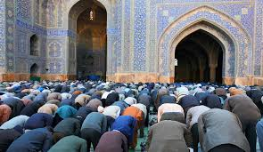
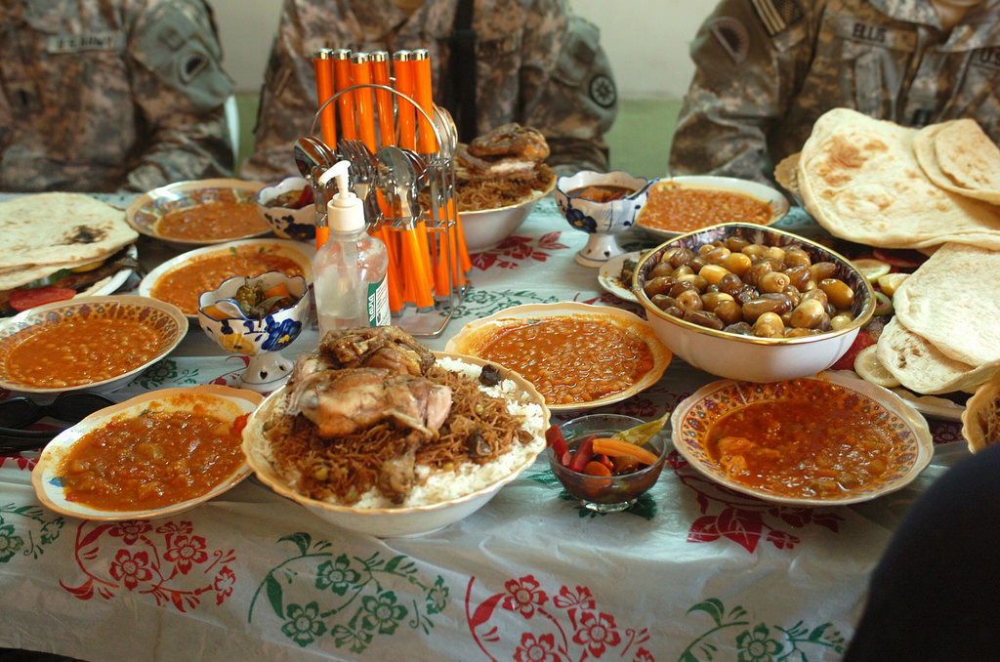
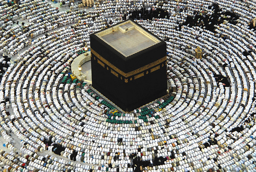

Islam is a religion practiced by millions of people all around the world. There are many similarities and differences between the teachings of Islam and the teachings of other religions. Throughout history, we have seen different religions clash because of their differences and bond because of their similar beliefs. We will focus on three of the greatest religions in the world: Islam, Christianity, and Judaism.
Islam, Christianity, and Judaism are all monotheistic religions, meaning that they believe in one god. They also share the same prophets in religious scriptures, such as Abraham, Noah, and Moses. Jesus is known in all three religions, but slightly adapted into each religion’s understandings. He is mainly is mentioned in Christian and Jewish scriptures, and Muslims know about him as well. These similarities unify how a lot of religions are chained or linked together. They also shape certain conflicts and disagreements between religions.
These three religions also have many differences which have caused terrible fights and conflict between the religions. . One important difference between Muslims, Jews, and Christians is their different beliefs regarding Jesus Christ. Muslims believe he was a human prophet, like Abraham and Moses, not the Son of God (Allah). They believe the birth of Jesus was similar to the creation of Adam. Jews do not believe that he was the Messiah, and they also do not believe that Jesus was resurrected from the dead. However, to the Christians, Jesus Christ is the central figure of their religion, and so they believe that he is the Messiah and the Son of God. Another difference between these religions is the direction in which they pray. Muslims pray towards Mecca, Jews pray towards Jerusalem, and Christians pray eastward.
The beliefs of Islam are very important to any member of the religion. There are many ways that people worship in Islam. There are Five Pillars of Faith for worship: faith (shahada), prayer (salat), charity (zakat), fasting (siyam), and making a pilgrimage to Mecca (Hajj). All of these pillars are many ways of worshipping Islamic leaders.
The first pillar of faith, shahada, represents the faith of the Muslims in Islamic beliefs. To show their faith in Allah and Muhammad’s prophethood, a Muslim says: “There is no god but Allah, and Muhammad is the messenger of Allah.”Shahada is not only the people’s belief in God, but also their submission to Him.
The second pillar of faith is salat, or prayer. Muslims are called to prayer five times a day, and before they start praying, they must purify themselves through ritual washings. Then, they pray towards Mecca, indicated by a qibla, or a niche in the wall. Muhammad said that, “prayer is the proof” of Islam. By doing Salat, it defines religious discipline, spirituality, and connection to God.
The third pillar of faith, zakat, or almsgiving, means giving to the needy. Zakat also reminds people of the great gifts He has given us. Muhammad told the rich people to share their wealth with the ones in need. Kitchens, orphanages, and hospitals are supported by money donated in zakat. The word zakat means “purification,” and Muslims believe that sharing one’s wealth helps control greed which, in a sense, purifies oneself.
The fourth pillar of faith is siyam, or fasting, and it means going without food for at least a day. It represents another way of worship that many religions practice today (including Islam). However, Muslims don’t fast for a day. They fast for a month. This is called the Ramadan month. Certain people do not have to fast, such as pregnant women, travelers, the sick, the elderly, and young children. A bit of the Qur’an is read every night. By the end of the Ramadan month, everyone has a huge feast, and by then, they have read/heard the entire Qur’an. They exchange gifts and hold a celebration called Eid al-Fitr.
The fifth and final pillar of faith is Hajj, or the pilgrimage to the birthplace of Muhammad: Mecca. It is a festivity between millions of believers who join together in the city of Mecca. For five days, they perform special rituals where they visit sacred sites. Before leaving Mecca, the pilgrims walk around the Kaaba seven times and Muslims all around the world celebrate the farewell day as Eid al-Adha. The Hajj encourages fellowship and equality in Islamic beliefs.
With these pillars of faith, Islam is able to direct many Muslims to a certain lifestyle based on the religion’s beliefs. People who live their lives according to their religion consider their religion's teachings as guidelines for their way of life, so religious teachings and beliefs are of great significance to these people. This is why there is so much conflict between different religions.
Now let's learn about the different accomplishments of Muslims that still impact us today. NEXT -->